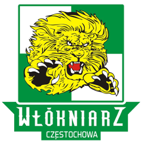

Najbardziej Utytułowane Drużyny Żużlowe
- Unia Leszno – 19 tytułów mistrzowskich
- ROW Rybnik – 12 tytułów mistrzowskich
- Stal Gorzów – 9 tytułów mistrzowskich
- Polonia Bydgoszcz – 7 tytułów mistrzowskich
- Wybrzeże Gdańsk – 6 tytułów mistrzowskich
- Sparta Wrocław – 6 tytułów mistrzowskich

- Włókniarz Częstochowa – 4 tytuły mistrzowskie 
- Apator Toruń – 4 tytuły mistrzowskie
- Motor Lublin – 3 tytuły mistrzowskie